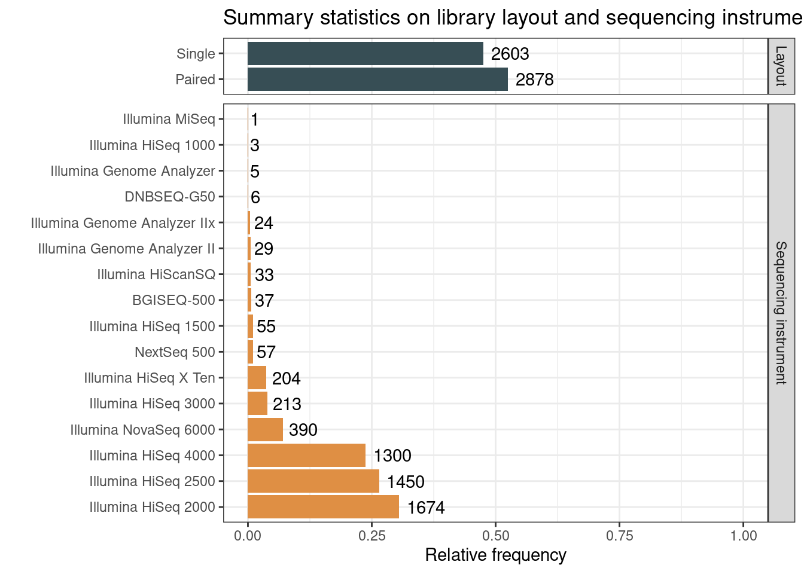
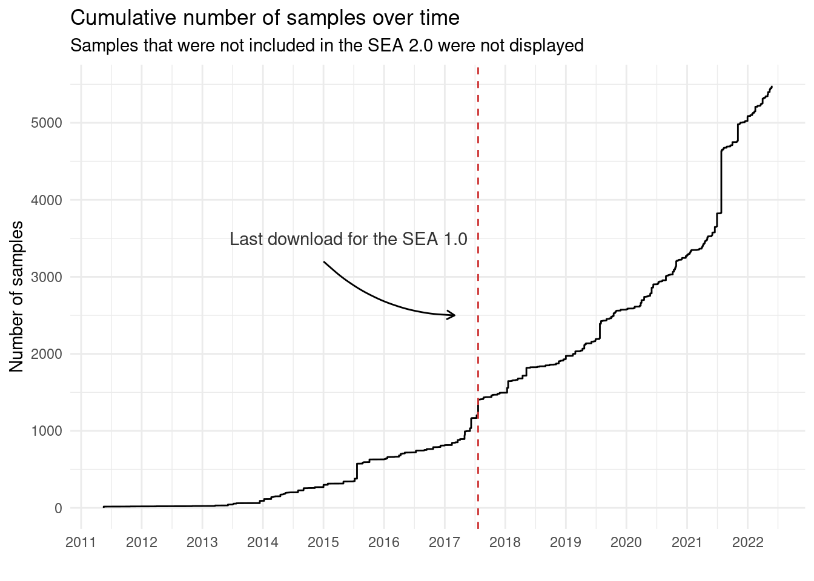
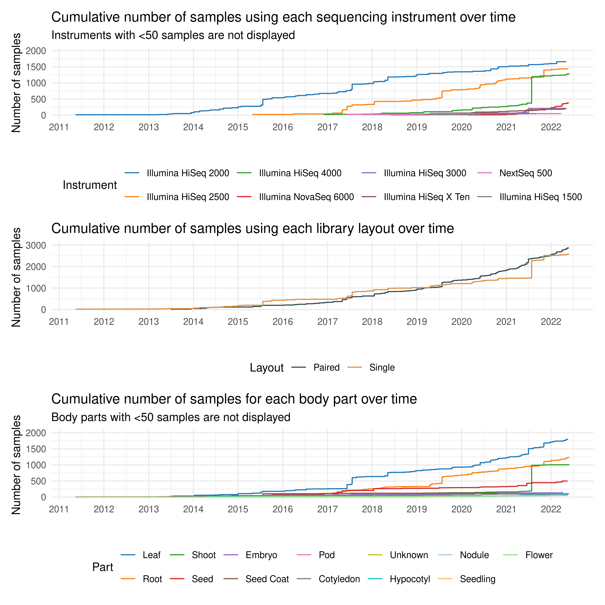
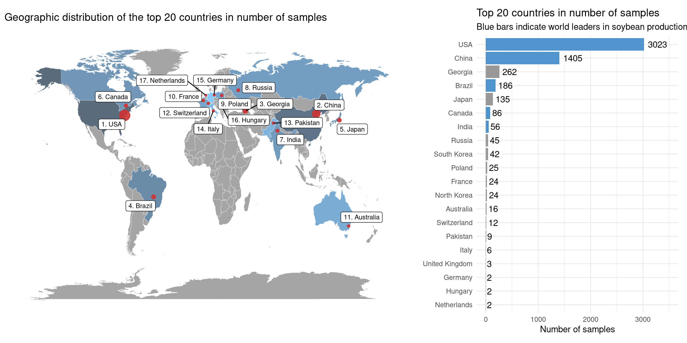

set.seed(123) # for reproducibility
library(here)
library(tidyverse)
library(patchwork)
library(maps)
library(ggrepel)3 Load required packages
4 Exploring and visualizing summary statistics
Here, we will describe the code to (visually) explore summary statistics of the BioSamples included in the SEA 2.0.
4.1 Exploratory data analyses
To start, let’s load the sample metadata information.
load(here("data", "sample_metadata_complete.rda"))4.1.1 Number of samples per body part
Here, we will visualize the number of samples per body part as a bar plot.
# Get data frame of counts
samples_per_body_part <- sample_metadata_complete |>
count(Part) |>
arrange(-n) |>
mutate(
Part = str_to_title(Part),
Part = factor(Part, levels = Part)
)
# Plot data
p_samples_per_body_part <- ggplot(
samples_per_body_part, aes(x = n, y = Part)
) +
geom_bar(stat = "identity", fill = "gray50") +
geom_text(aes(label = n), hjust = -0.2) +
theme_minimal() +
labs(
x = "Number of BioSamples", y = "",
title = "Number of BioSamples per body part"
) +
scale_x_continuous(limits = c(0, 2000))# Save plot to file
save(
p_samples_per_body_part, compress = "xz",
file = here("products", "plots", "p_samples_per_body_part.rda")
)4.1.2 Sequencing technology and library layout
# Get a data frame of counts for sequencing technology
seqtech_count <- sample_metadata_complete |>
mutate(
Instrument = str_replace_all(
Instrument, c(
"^HiSeq X Ten$" = "Illumina HiSeq X Ten",
"^Illumina HiSeq X$" = "Illumina HiSeq X Ten"
)
)
) |>
count(Instrument) |>
arrange(-n) |>
mutate(
Instrument = factor(Instrument, levels = Instrument),
Group = "Sequencing instrument"
) |>
rename(Variable = Instrument)
# Get a data frame of counts for library layout
layout_count <- sample_metadata_complete |>
mutate(Layout = str_replace_all(Layout, c(
"PAIRED" = "Paired",
"SINGLE" = "Single"
))) |>
count(Layout) |>
arrange(-n) |>
mutate(
Layout = factor(Layout, levels = Layout),
Group = "Layout"
) |>
rename(Variable = Layout)
# Plot data
p_seqtech_layout_count <- bind_rows(
seqtech_count, layout_count
) |>
mutate(prop = n / nrow(sample_metadata_complete)) |>
ggplot(aes(x = prop, y = Variable)) +
geom_bar(aes(fill = Group), stat = "identity", show.legend = FALSE) +
ggsci::scale_fill_jama() +
facet_grid(Group ~ ., scales = "free", space = "free") +
geom_text(aes(label = n), hjust = -0.2) +
theme_bw() +
scale_x_continuous(limits = c(0, 1)) +
labs(
title = "Summary statistics on library layout and sequencing instrument",
x = "Relative frequency", y = ""
)
p_seqtech_layout_count
# Save plot to file
save(
p_seqtech_layout_count, compress = "xz",
file = here("products", "plots", "p_seqtech_layout_count.rda")
)4.2 Time series data
Here, we will explore the evolution of some variables (e.g., body part, sequencing technology, etc.) over time, as well as a cumulative distribution of samples over time.
4.2.1 Number of samples over time
Here, we will plot a cumulative sum of the number of samples over time, highlighting what changed since the Soybean Expression Atlas 1.0 (last download on July 21, 2017).
p_nsamples_over_time_cumsum <- sample_metadata_complete |>
select(Date) |>
mutate(
Date = as.Date(Date),
N = 1
) |>
arrange(Date) |>
mutate(cumulative_sum = cumsum(N)) |>
# Plot
ggplot(aes(x = Date, y = cumulative_sum, group = 1)) +
geom_line() +
scale_x_date(date_breaks = "1 year", date_labels = "%Y") +
theme_minimal() +
labs(
title = "Cumulative number of samples over time",
subtitle = "Samples that were not included in the SEA 2.0 were not displayed",
x = "", y = "Number of samples"
) +
scale_y_continuous(breaks = seq(0, 6000, 1000)) +
geom_vline(
xintercept = as.Date("2017-07-21"), color = "brown3", linetype = 2
) +
annotate(
"text", x = as.Date("2015-06-01"), y = 3500,
label = "Last download for the SEA 1.0", color = "gray20"
) +
annotate(
geom = "curve",
x = as.Date("2015-01-01"), xend = as.Date("2017-03-01"),
y = 3200, yend = 2500,
curvature = .2, arrow = arrow(length = unit(2, "mm"))
)
p_nsamples_over_time_cumsum
# Save plot object
save(
p_nsamples_over_time_cumsum, compress = "xz",
file = here("products", "plots", "p_nsamples_over_time_cumsum.rda")
)4.2.2 Sequencing technologies and library layout over time
Here, we will explore how sequencing technologies and library layout evolved over time by taking a look at the deposited samples. We want to find out whether a particular technology was common in the early years, but was quickly replaced by more modern technologies, for example. For library layout, we hypothesize that single-end sequencing was more common in the early years, but paired-end sequencing has now become more popular.
# Plot cumulative number of samples for each sequencing instrument over time
p_seqtech_timeseries <- sample_metadata_complete |>
# Select only Date and Instrument and add dummy variable N with count
select(Instrument, Date) |>
mutate(
Instrument = str_replace_all(
Instrument, c(
"^HiSeq X Ten$" = "Illumina HiSeq X Ten",
"^Illumina HiSeq X$" = "Illumina HiSeq X Ten"
)
),
Date = as.Date(Date),
N = 1
) |>
# Remove instruments with <50 samples
inner_join(
seqtech_count |> filter(n >= 50) |> select(Instrument = Variable)
) |>
arrange(Date) |>
# Calculate cumulative sum per instrument
group_by(Instrument) |>
mutate(cumulative_sum = cumsum(N)) |>
ungroup() |>
mutate(
Instrument = factor(
Instrument, levels = seqtech_count |> filter(n >= 50) |> pull(Variable)
)
) |>
ggplot(aes(x = Date, y = cumulative_sum, group = Instrument)) +
geom_line(aes(color = Instrument)) +
ggsci::scale_color_d3("category20") +
scale_x_date(date_breaks = "1 year", date_labels = "%Y") +
theme_minimal() +
labs(
title = "Cumulative number of samples using each sequencing instrument over time",
subtitle = "Instruments with <50 samples are not displayed",
x = "", y = "Number of samples"
) +
ylim(0, 2000) +
theme(legend.position = "bottom")
# Plot cumulative number of samples for each library layout over time
p_layout_timeseries <- sample_metadata_complete |>
select(Layout, Date) |>
mutate(
Layout = str_replace_all(Layout, c(
"PAIRED" = "Paired",
"SINGLE" = "Single"
)),
Date = as.Date(Date),
N = 1
) |>
arrange(Date) |>
# Calculate cumulative sum per instrument
group_by(Layout) |>
mutate(cumulative_sum = cumsum(N)) |>
ungroup() |>
ggplot(aes(x = Date, y = cumulative_sum, group = Layout)) +
geom_line(aes(color = Layout)) +
scale_x_date(date_breaks = "1 year", date_labels = "%Y") +
theme_minimal() +
ggsci::scale_color_jama() +
labs(
title = "Cumulative number of samples using each library layout over time",
x = "", y = "Number of samples"
) +
ylim(0, 3000) +
theme(legend.position = "bottom")
# Plot number of samples for each body part over time
p_bodypart_timeseries <- sample_metadata_complete |>
select(Part, Date) |>
# Remove body parts with <50 samples
inner_join(
count(sample_metadata_complete, Part) |> filter(n >= 50) |> select(Part)
) |>
mutate(
Part = str_to_title(Part),
Date = as.Date(Date),
N = 1
) |>
mutate(
Part = factor(
Part, levels = count(sample_metadata_complete, Part) |>
arrange(-n) |>
filter(n >= 50) |>
mutate(Part = str_to_title(Part)) |>
pull(Part)
)
) |>
arrange(Date) |>
# Calculate cumulative sum per instrument
group_by(Part) |>
mutate(cumulative_sum = cumsum(N)) |>
ungroup() |>
ggplot(aes(x = Date, y = cumulative_sum, group = Part)) +
geom_line(aes(color = Part)) +
scale_x_date(date_breaks = "1 year", date_labels = "%Y") +
theme_minimal() +
ggsci::scale_color_d3("category20") +
labs(
title = "Cumulative number of samples for each body part over time",
subtitle = "Body parts with <50 samples are not displayed",
x = "", y = "Number of samples"
) +
ylim(0, 2000) +
theme(legend.position = "bottom") +
guides(color = guide_legend(nrow = 2))
p_seqtech_timeseries / p_layout_timeseries / p_bodypart_timeseries
# Saving each plot
save(
p_seqtech_timeseries, compress = "xz",
file = here("products", "plots", "p_seqtech_timeseries.rda")
)
save(
p_layout_timeseries, compress = "xz",
file = here("products", "plots", "p_layout_timeseries.rda")
)
save(
p_bodypart_timeseries, compress = "xz",
file = here("products", "plots", "p_bodypart_timeseries.rda")
)4.3 Number of samples per country
In this section, we will calculate and visualize the number of samples per country to understand who contributes with most samples to databases. We also want to look for associations between the number of samples and soybean production.
Geographic information will be obtainded from the file sra_run_selector_2023-12-16.txt, which was downloaded from SRA Run Selector. In details, we searched “Glycine max[ORGN] AND RNA-seq[STRA]” on NCBI’s SRA, clicked on Send results to Run selector, and downloaded the metadata for all samples.
samples_per_country <- read_csv(
here("data", "sra_run_selector_2023-02-16.txt")
) |>
inner_join(sample_metadata_complete |> rownames_to_column("BioSample")) |>
distinct(BioSample, .keep_all = TRUE) |>
select(BioSample, BioProject, `Center Name`, geo_loc_name_country, geo_loc_name) |>
mutate(
Country = case_when(
is.na(geo_loc_name_country) |
str_detect(geo_loc_name_country, "uncalculated") ~ `Center Name`,
TRUE ~ geo_loc_name_country
)
) |>
mutate(
Country = str_replace_all(
Country, c(
"JGI" = "USA",
"HORTICULTURE AND CROP SCIENCE, OHIO STATE UNIVERSITY" = "USA",
"FUJIAN AGRICULTURE AND FORESTRY UNIVERSITY" = "China",
"MICHIGAN STATE UNIVERSITY" = "USA",
"Hong Kong" = "China",
"UNIVERSIDADE FEDERAL DE LAVRAS" = "Brazil",
"UNIVERSITY OF GEORGIA" = "Georgia",
"INSTITUTE OF GENETICS AND DEVELOPMENTAL BIOLOGY, C" = "China",
"RIKEN_CSRS" = "Japan",
"KUNMING INSTITUTE OF ZOOLOGY" = "China",
"ADAM MICKIEWICZ UNIVERSITY POZNAN" = "Poland",
"NICS" = "India",
"GUANGZHOU UNIVERSITY" = "China",
"ANYANG INSTITUTE OF TECHNOLOGY" = "China",
"BRAZILIAN AGRICULTURAL RESEARCH CORPORATION - EMBRAPA" = "Brazil",
"UNIVERSITY OF MISSOURI AT COLUMBIA" = "USA",
"THE OHIO STATE UNIVERSITY" = "USA",
"SICHUAN AGRICULTURAL UNIVERSITY" = "China",
"NORTHWEST A&F UNIVERSITY" = "China",
"NORTHEAST INSTITUTE OF GEOGRAPHY AND AGROECOLOGY" = "China",
".*Switzerland.*" = "Switzerland",
"NATIONAL ACADEMY OF AGRICULTURAL SCIENCE" = "India",
"UNIVERSITY OF MELBOURNE" = "Australia",
"TOTTORI" = "Japan",
"TOKYO_AGRITECH" = "Japan",
"JILIN NORMAL UNIVERSITY" = "China",
"UNIVERSIDADE FEDERAL DO RIO DE JANEIRO" = "Brazil",
"UNITED STATES DEPARTMENT OF AGRICULTURE" = "USA",
"SOUTH CHINA AGRICULTURAL UNIVERSITY" = "China",
"NUGSS" = "Japan",
"LAVAL UNIVERSITY" = "Canada",
"KOCHI" = "India",
"CHUBU" = "Japan",
"USDA-ARS" = "USA",
"PURDUE UNIVERSITY" = "USA",
"ICS-CAAS" = "China",
"AGRICULTURE & AGRI-FOOD CANADA" = "Canada",
"UNIVERSITY OF ARIZONA" = "USA",
"QINGDAO AGRICULTURAL UNIVERSITY" = "China",
"CUHK" = "China",
"THE UNIVERSITY OF QUEENSLAND" = "Australia",
"SEOUL NATIONAL UNIVERSITY" = "South Korea",
"NANJING AGRICULTURAL UNIVERSITY" = "China",
"INSTITUTE OF MICROBIOLOGY, CHINESE ACADEMY OF SCIENCES" = "China"
)
)
) |>
filter(
!Country %in% c(
"Mehran Dastmalchi", "Arun kumaran Anguraj vadivel"
)
) |>
arrange(Country)
# Get geographic information for samples from "GEO"
get_bioproject_submission <- function(bioproject_ids) {
submission <- Reduce(rbind, lapply(bioproject_ids, function(x) {
url <- file.path("https://www.ncbi.nlm.nih.gov/bioproject", x)
s <- rvest::read_html(url) |>
rvest::html_table() |>
pluck(1) |>
filter(X1 == "Submission") |>
pull(X2)
sdf <- data.frame(BioProject = x, Submission = s)
return(sdf)
}))
return(submission)
}
geo_projects <- samples_per_country |>
filter(Country == "GEO") |>
pull(BioProject) |>
unique()
geo_projects_info <- get_bioproject_submission(geo_projects)
geo_projects_location <- geo_projects_info |>
mutate(
Submission = str_replace_all(
Submission, ".*\\d{1,2}-[A-Z][a-z]{2}-\\d{4}", ""
)
) |>
mutate(
Country = str_replace_all(
Submission, c(
".*Illinois.*" = "USA",
".*Universidade.*" = "Brazil",
".*USDA.*" = "USA",
".*Nanjing.*" = "China",
".*United States.*" = "USA",
".*US .*" = "USA",
".*UNCC.*" = "USA",
".*Donald Danforth.*" = "USA",
".*Missouri.*" = "USA",
".*Georgia.*" = "Georgia",
".*Embrapa.*" = "Brazil",
".*UFRGS.*" = "Brazil",
".*California.*" = "USA",
".*Virginia Tech.*" = "USA",
".*Chinese.*" = "China",
".*Purdue.*" = "USA",
".*NC State University.*" = "USA",
".*Hangzhou.*" = "China",
".*Iowa.*" = "USA",
".*Institute of Genetics and Developmental Biology.*" = "China",
".*Nanchang.*" = "China",
".*Tennessee.*" = "USA",
".*South Dakota.*" = "USA",
".*North Carolina.*" = "USA",
".*Shandong.*" = "China",
".*Zhejiang.*" = "China",
".*China.*" = "China",
".*Wisconsin.*" = "USA",
".*West Virginia.*" = "USA",
".*Fujian.*" = "China",
".*INRA.*" = "France",
".*Salk.*" = "USA",
".*Tottori.*" = "Japan",
".*Kangwon.*" = "South Korea",
".*Shanghai.*" = "China",
".*Jilin.*" = "China",
".*Michigan.*" = "USA",
".*Northeast Agricultural University.*" = "China",
".*USA.*" = "USA",
".*IGDB.*" = "China"
)
)
)
# Create a final table of samples per country
samples_nongeo <- samples_per_country |>
filter(Country != "GEO") |>
select(BioSample, Country)
samples_geo <- geo_projects_location |>
select(BioProject, Country) |>
inner_join(samples_per_country |> select(BioProject, BioSample)) |>
select(BioSample, Country)
final_samples_per_country <- bind_rows(
samples_nongeo, samples_geo
) |>
count(Country) |>
arrange(-n)There are 27 countries in the list of submitters. However, for a better visualization, we will only include the top 20 countries. Seven countries contributed with only 1 sample each, and they are Belgium, Norway, Romania, Serbia, Taiwan, Ukraine, and Uzbekistan.
# Get world map
world <- map_data("world") # World map
# Get one point per country (capital)
world_capital <- world.cities[world.cities$capital == 1, ]
# SRA samples in the world
world_samples <- inner_join(
final_samples_per_country |> slice_head(n = 20),
world_capital |> rename(Country = country.etc)
) |>
rownames_to_column("code") |>
mutate(
log2_n = log2(n),
log10_n = log10(n)
)
# Create color code for countries
final_world <- left_join(
world, world_samples, by = c("region" = "Country")
) |>
mutate(
code = as.numeric(code),
code = tidyr::replace_na(code, 0),
code = as.factor(code)
)
# Plot map with blue scale and bubbles
p_map_samples_per_country <- ggplot() +
geom_map(
data = final_world, map = world,
aes(long.x, lat.x, map_id = region, fill = as.numeric(log2_n)),
color = "white", alpha = 0.7, size = 0.1, show.legend = FALSE
) +
labs(fill = expression(paste(log[2], " N"))) +
scale_fill_gradient(low = "#56B1F7", high = "#132B43") +
geom_point(
data = world_samples, aes(x = long, y = lat, size = n),
color = "brown3", alpha = 0.9, show.legend = FALSE
) +
guides(size = FALSE, color = FALSE) +
geom_label_repel(
data = world_samples,
aes(
x = long, y = lat,
label = paste0(1:nrow(world_samples), ". ", Country)
),
max.overlaps = 20,
size = 2.9
) +
theme_void() +
labs(
title = "Geographic distribution of the top 20 countries in number of samples"
)
# Plot bar plot of number of samples per country
## Top world soybean producers: http://soystats.com/international-world-soybean-production/
top_producers <- c(
"Brazil", "USA", "Argentina", "China", "India", "Paraguay", "Canada"
)
p_barplot_samples_per_country <- final_samples_per_country |>
slice_head(n = 20) |>
mutate(Country = factor(Country, levels = rev(Country))) |>
ggplot(aes(x = n, y = Country)) +
geom_col(
aes(fill = ifelse(Country %in% top_producers, "steelblue3", "grey60"))
) +
scale_fill_identity() +
#geom_col(fill = "grey50") +
geom_text(aes(label = n), hjust = -0.2) +
theme_minimal() +
labs(
title = "Top 20 countries in number of samples",
subtitle = "Blue bars indicate world leaders in soybean production.",
x = "Number of samples", y = ""
) +
xlim(0, 3500)
wrap_plots(
p_map_samples_per_country, p_barplot_samples_per_country,
widths = c(2, 1)
)
# Save plots to files
save(
p_map_samples_per_country, final_world, world, world_samples,
compress = "xz",
file = here("products", "plots", "p_map_samples_per_country.rda")
)
save(
p_barplot_samples_per_country, compress = "xz",
file = here("products", "plots", "p_barplot_samples_per_country.rda")
)Session information
This document was created under the following conditions:
sessioninfo::session_info()─ Session info ───────────────────────────────────────────────────────────────
setting value
version R version 4.3.0 (2023-04-21)
os Ubuntu 20.04.5 LTS
system x86_64, linux-gnu
ui X11
language (EN)
collate en_US.UTF-8
ctype en_US.UTF-8
tz Europe/Brussels
date 2023-06-23
pandoc 3.1.1 @ /usr/lib/rstudio/resources/app/bin/quarto/bin/tools/ (via rmarkdown)
─ Packages ───────────────────────────────────────────────────────────────────
package * version date (UTC) lib source
cli 3.6.1 2023-03-23 [1] CRAN (R 4.3.0)
colorspace 2.1-0 2023-01-23 [1] CRAN (R 4.3.0)
digest 0.6.31 2022-12-11 [1] CRAN (R 4.3.0)
dplyr * 1.1.2 2023-04-20 [1] CRAN (R 4.3.0)
evaluate 0.20 2023-01-17 [1] CRAN (R 4.3.0)
fansi 1.0.4 2023-01-22 [1] CRAN (R 4.3.0)
farver 2.1.1 2022-07-06 [1] CRAN (R 4.3.0)
fastmap 1.1.1 2023-02-24 [1] CRAN (R 4.3.0)
forcats * 1.0.0 2023-01-29 [1] CRAN (R 4.3.0)
generics 0.1.3 2022-07-05 [1] CRAN (R 4.3.0)
ggplot2 * 3.4.1 2023-02-10 [1] CRAN (R 4.3.0)
ggrepel * 0.9.3 2023-02-03 [1] CRAN (R 4.3.0)
ggsci 3.0.0 2023-03-08 [1] CRAN (R 4.3.0)
glue 1.6.2 2022-02-24 [1] CRAN (R 4.3.0)
gtable 0.3.3 2023-03-21 [1] CRAN (R 4.3.0)
here * 1.0.1 2020-12-13 [1] CRAN (R 4.3.0)
hms 1.1.3 2023-03-21 [1] CRAN (R 4.3.0)
htmltools 0.5.5 2023-03-23 [1] CRAN (R 4.3.0)
htmlwidgets 1.6.2 2023-03-17 [1] CRAN (R 4.3.0)
jsonlite 1.8.4 2022-12-06 [1] CRAN (R 4.3.0)
knitr 1.42 2023-01-25 [1] CRAN (R 4.3.0)
labeling 0.4.2 2020-10-20 [1] CRAN (R 4.3.0)
lifecycle 1.0.3 2022-10-07 [1] CRAN (R 4.3.0)
lubridate * 1.9.2 2023-02-10 [1] CRAN (R 4.3.0)
magrittr 2.0.3 2022-03-30 [1] CRAN (R 4.3.0)
maps * 3.4.1 2022-10-30 [1] CRAN (R 4.3.0)
munsell 0.5.0 2018-06-12 [1] CRAN (R 4.3.0)
patchwork * 1.1.2 2022-08-19 [1] CRAN (R 4.3.0)
pillar 1.9.0 2023-03-22 [1] CRAN (R 4.3.0)
pkgconfig 2.0.3 2019-09-22 [1] CRAN (R 4.3.0)
purrr * 1.0.1 2023-01-10 [1] CRAN (R 4.3.0)
R6 2.5.1 2021-08-19 [1] CRAN (R 4.3.0)
Rcpp 1.0.10 2023-01-22 [1] CRAN (R 4.3.0)
readr * 2.1.4 2023-02-10 [1] CRAN (R 4.3.0)
rlang 1.1.1 2023-04-28 [1] CRAN (R 4.3.0)
rmarkdown 2.21 2023-03-26 [1] CRAN (R 4.3.0)
rprojroot 2.0.3 2022-04-02 [1] CRAN (R 4.3.0)
rstudioapi 0.14 2022-08-22 [1] CRAN (R 4.3.0)
scales 1.2.1 2022-08-20 [1] CRAN (R 4.3.0)
sessioninfo 1.2.2 2021-12-06 [1] CRAN (R 4.3.0)
stringi 1.7.12 2023-01-11 [1] CRAN (R 4.3.0)
stringr * 1.5.0 2022-12-02 [1] CRAN (R 4.3.0)
tibble * 3.2.1 2023-03-20 [1] CRAN (R 4.3.0)
tidyr * 1.3.0 2023-01-24 [1] CRAN (R 4.3.0)
tidyselect 1.2.0 2022-10-10 [1] CRAN (R 4.3.0)
tidyverse * 2.0.0 2023-02-22 [1] CRAN (R 4.3.0)
timechange 0.2.0 2023-01-11 [1] CRAN (R 4.3.0)
tzdb 0.3.0 2022-03-28 [1] CRAN (R 4.3.0)
utf8 1.2.3 2023-01-31 [1] CRAN (R 4.3.0)
vctrs 0.6.2 2023-04-19 [1] CRAN (R 4.3.0)
withr 2.5.0 2022-03-03 [1] CRAN (R 4.3.0)
xfun 0.39 2023-04-20 [1] CRAN (R 4.3.0)
yaml 2.3.7 2023-01-23 [1] CRAN (R 4.3.0)
[1] /home/faalm/R/x86_64-pc-linux-gnu-library/4.3
[2] /usr/local/lib/R/site-library
[3] /usr/lib/R/site-library
[4] /usr/lib/R/library
──────────────────────────────────────────────────────────────────────────────